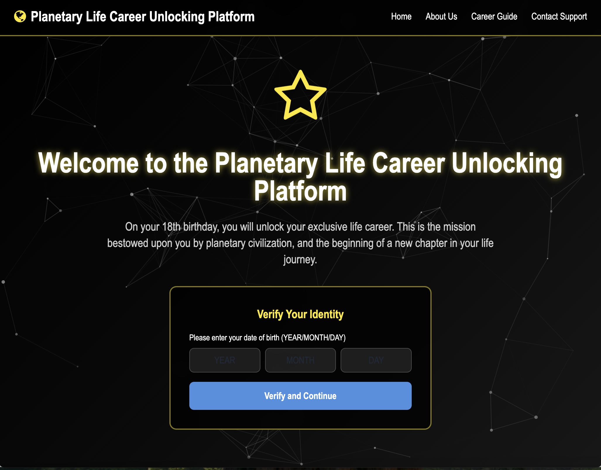

01 / COURSE PROJECT
KISMET 行星人生职业解锁平台
反焦虑交互叙事项目
互动网站： https://chenzuze2222.github.io/v4/
本交互叙事作品由本人负责核心主题立意、架空科幻星球KISMET世界观搭建，以及《行星人生职业解锁平台》交互网站完整全案设计。
核心交互设计逻辑： · 搭建完整线性沉浸式交互动线：身份信息录入→系统智能匹配→仪式化分配结果展示。页面文案刻意复刻官方标准化宣传话术，将分配规则包装为“个人潜质、文明传承、星球发展需求”三位一体的公平机制，制造分配公平的虚假观感； · 结果页面分层展示岗位名称、工作职责、适配人格特质、星球赋予使命，把小说原作中主角等待终身命运宣判的心理叙事转化为可视化、可操作的线上沉浸式体验，完整还原“十八岁终身绑定职业”的极端架空阶级设定为载体，结合马克思劳动异化理论与当代青年社会现实观察，聚焦青年就业焦虑、阶层固化、社会资源分配不公核心议题。
